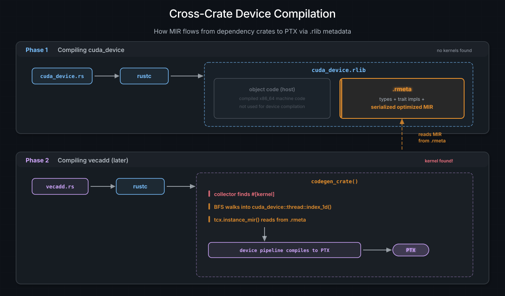
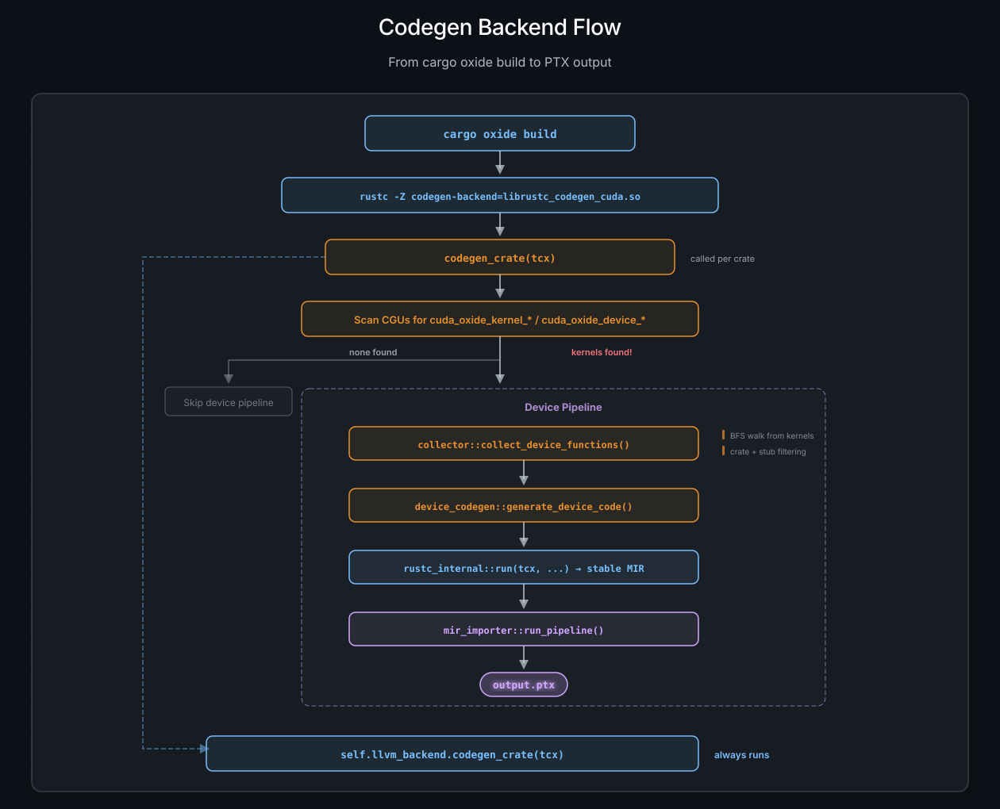

The Code Generator: rustc-codegen-cuda#
Every Rust program eventually reaches the codegen backend – the part of the
compiler that turns optimized MIR into machine code. Normally, that backend is
LLVM. cuda-oxide swaps in its own backend, rustc-codegen-cuda, which
intercepts this process to extract device code and route it through the
cuda-oxide pipeline before handing everything else back to LLVM as if nothing
happened.
This page explains how that backend loads, what it does when rustc calls it, and how it finds every function that belongs on the GPU.
How rustc Loads a Custom Backend#
rustc has a flag most people never see:
rustc -Z codegen-backend=path/to/libfoo.so
When you pass this flag, rustc does the following:
Calls
dlopenon the shared library.Calls
dlsym("__rustc_codegen_backend")to find the entry point.Expects that function to return a
Box<dyn CodegenBackend>.
That’s it. No plugin registry, no config files, no handshake protocol. One symbol, one trait object, and you own the codegen pipeline.
cuda-oxide provides this entry point:
#[unsafe(no_mangle)]
pub fn __rustc_codegen_backend() -> Box<dyn CodegenBackend> {
let config = CudaCodegenConfig::from_env();
let llvm_backend = rustc_codegen_llvm::LlvmCodegenBackend::new();
Box::new(CudaCodegenBackend { config, llvm_backend })
}
Two things happen here. First, CudaCodegenConfig::from_env() reads
environment variables (CUDA_OXIDE_VERBOSE, CUDA_OXIDE_DUMP_MIR, and
friends – see Environment Variables below) to
configure the backend’s behavior. Second, it creates the standard LLVM backend
and stores it inside the CudaCodegenBackend. This is the wrapping pattern
that makes the whole architecture work: cuda-oxide does not replace the LLVM
backend, it wraps it.
Nota
cargo oxide build sets the -Z codegen-backend flag for you. You never need
to type the dlopen incantation yourself unless you enjoy that sort of thing.
The Intercept: codegen_crate()#
The CodegenBackend trait has several methods, but the one that matters is
codegen_crate(tcx). This is where rustc hands over the entire typed,
borrow-checked, monomorphized crate and says «make this into machine code.»
When rustc calls CudaCodegenBackend::codegen_crate(tcx), here is what
happens:
Step 1: Collect Monomorphized Items#
let (items, cgus) = tcx.collect_and_partition_mono_items(());
This gives us every monomorphized function in the crate, grouped into codegen units (CGUs). A CGU is rustc’s unit of parallel code generation – think of it as a bucket of functions that will become one object file.
Step 2: Scan for Device Entry Points#
The backend iterates over every function in every CGU and checks for the magic name prefixes:
cuda_oxide_kernel_<hash>_– set by#[kernel]cuda_oxide_device_<hash>_– set by#[device]
These prefixes are how the proc macros communicate with the backend. There is
no special attribute metadata, no side channel – just a name that stands out
in a crowd. The exact prefix strings (and the helpers that match and strip
them) live in the workspace-internal reserved-oxide-symbols crate; both the
macro side and the collector side import from there so the contract stays in
one place. The 8-hex-char <hash> makes accidental collisions effectively
impossible: nobody writes cuda_oxide_kernel_246e25db_foo by accident.
Step 3: If Device Code Found, Build and Compile#
If any kernel or device function is found, two things happen in sequence:
a) Collect the device call graph.
collector::collect_device_functions() performs a breadth-first walk from
every kernel entry point, discovering all functions that transitively get
called from device code. More on this in Device Function Collection.
b) Generate device code.
device_codegen::generate_device_code() bridges the collected functions to
stable MIR and runs the full cuda-oxide pipeline (dialect-mir -> mem2reg ->
annotated loop unroll -> LLVM dialect -> .ll -> PTX).
Step 4: Always Compile Host Code#
Regardless of whether device code was found:
self.llvm_backend.codegen_crate(tcx)
The wrapped LLVM backend compiles all the host code – main(), your CLI
parser, your async runtime, everything. The device pipeline is a side quest;
the host pipeline always runs.
The Other Trait Methods#
The CodegenBackend trait also requires join_codegen() and link(). These
handle waiting for parallel codegen threads and invoking the linker,
respectively. In cuda-oxide, both are pure delegation:
fn join_codegen(&self, ongoing: Box<dyn Any>, sess: &Session) -> ... {
self.llvm_backend.join_codegen(ongoing, sess)
}
fn link(&self, sess: &Session, codegen: ..., outputs: &OutputFilenames) -> ... {
self.llvm_backend.link(sess, codegen, outputs)
}
No interception, no modification. The LLVM backend handles linking exactly as it normally would.
Nota
For most crates in the dependency tree – core, cuda-core, random
utility crates – no kernels are found and the backend just delegates to LLVM.
The device pipeline only activates for the crate that actually contains a
#[kernel] function. For a typical project, that means one crate out of
dozens triggers device compilation.
Device Function Collection#
Finding kernel entry points is the easy part. The hard part is figuring out
everything else those kernels call. A kernel might call a helper, which calls
a cuda-device intrinsic, which calls a core math function – and all of
those need to end up in the PTX.
The collector module handles this with a breadth-first traversal of the MIR
call graph.
The Worklist Algorithm#
worklist = [all kernel entry points]
visited = {}
collected = []
while worklist is not empty:
fn = worklist.pop()
if fn in visited: continue
visited.add(fn)
mir = tcx.instance_mir(fn)
collected.push(fn)
for basic_block in mir:
for terminator in [Call, Drop]:
callee = resolve_callee(terminator)
if should_collect(callee):
worklist.push(callee)
For each function, the collector retrieves its MIR via tcx.instance_mir(),
then scans every basic block’s terminator. Call and Drop terminators
reference callees, which get added to the worklist if they pass the crate
filtering rules.
The output is a Vec<CollectedFunction>, where each entry carries:
The monomorphized
Instance(the fully resolved, generic-free function).An
is_kernelflag (for marking GPU entry points in the PTX metadata).The
export_name(the symbol name visible in the final PTX).
Export Names and FQDN Alignment#
The collector must produce export names that match what the MIR translator
generates for call targets. Both sides use fully qualified domain names
(FQDNs) – for example, helper_fn::cuda_oxide_device_<hash>_vecadd_device rather
than bare vecadd_device.
The rustc_public API’s CrateDef::name() returns FQDNs including the crate
name. On the collector side, def_path_str() omits the crate name for local
items, so a small helper (fqdn()) prepends it for local definitions to
produce the same string.
During lowering, :: is converted to __ on both the definition and call
sides, producing valid LLVM/PTX identifiers (e.g., helper_fn__vecadd_device).
For generic or complex names (angle brackets, closures), the mangled symbol name is used instead – this is unique and already a valid identifier.
Kernel entry points follow a separate path: compute_kernel_export_name
takes the #[kernel] macro’s base name and, for generic and closure-
generic instantiations, appends _TID_<hex32> where <hex32> is
rustc’s 128-bit type-id hash of the concrete generated kernel function item.
That FnDef contains ordered type and const arguments. The host launcher
computes the same hash through the core::intrinsics::type_id intrinsic
(wrapped by cuda_host::type_id_u128_of_val), so both sides agree
byte-for-byte within one unified build. Non-generic kernels keep their bare
base name.
Nota
This FQDN alignment strategy will be replaced by pliron’s Legaliser when
the framework is upgraded. The Legaliser provides systematic name
sanitization with collision detection, making manual :: to __ replacement
unnecessary.
Crate Filtering Rules#
Not every function in the dependency tree belongs on a GPU. The collector enforces rules about which crates are allowed in device code:
Crate |
Status |
Notes |
|---|---|---|
Local crate |
Allowed |
Your kernel code |
|
Allowed |
GPU intrinsics (stubs filtered – see below) |
|
Allowed |
|
Other |
Allowed |
Any crate in the dependency tree |
|
Forbidden |
Compile-time error |
|
Allowed (if GPU allocator) |
Experimental |
The rule is simple: if a crate could conceivably run on a GPU (no OS
dependencies, no file I/O, no networking), it is allowed. If it drags in
std, it is not.
Error Messages#
When someone accidentally tries to use std in device code – perhaps a
stray println! left over from debugging – the collector produces a clear
error instead of letting the build fail with an inscrutable PTX assembler
message three stages later:
CUDA-OXIDE: FORBIDDEN CRATE IN DEVICE CODE
Device code calls: std::io::_print
From crate: 'std'
Only these crates are allowed in device code:
- Local crate (your kernel code)
- cuda_device (GPU intrinsics)
- core (no_std standard library)
This is one of the advantages of catching the problem at the call graph level rather than hoping LLVM will produce a useful diagnostic. (It won’t.)
Intrinsic Stub Filtering#
cuda_device contains functions like threadIdx_x() whose bodies are just
unreachable!(). These are stubs – placeholders that exist so rustc can
type-check device code, but they are never meant to be compiled as real
functions. They get replaced by dialect-nvvm operations later in the
pipeline (for instance, threadIdx_x() becomes nvvm.read_ptx_sreg_tid_x).
The collector recognizes these stubs – they come from cuda_device and have no
meaningful MIR beyond a single unreachable terminator – and skips them. If
you are wondering «but if the body is unreachable!(), won’t that panic at
runtime?»: no, because mir-importer replaces calls to these functions with
the corresponding GPU hardware instructions before any code generation
happens. The stub body never executes.
Cross-Crate Device Compilation#
Here is a question that sounds simple until you think about it: when you call
cuda_device::thread::index_1d() from a kernel, how does the compiler get that
function’s MIR? Your crate does not have its source code. cuda_device was
compiled hours ago, possibly by a different machine.
The answer lies in how rustc stores metadata.
The .rlib Flow#
When rustc compiles cuda_device, there are no #[kernel] functions in that
crate. The cuda-oxide backend finds nothing to intercept and delegates
entirely to LLVM. The output is a standard .rlib archive containing:
Compiled machine code – the host-side object file.
.rmetametadata blob – type information, trait impls, and crucially, serialized optimized MIR for certain functions.
Later, when you compile your vecadd crate, the collector finds a kernel
entry point and starts the BFS walk. It encounters a call to
cuda_device::thread::index_1d(). At this point, tcx.instance_mir() reaches
into cuda_device’s .rmeta blob and retrieves the function’s MIR – fully
optimized, monomorphized, ready to translate.
{kind=link}

Cross-crate device compilation. Phase 1 compiles cuda_device into an .rlib with serialized MIR in its .rmeta blob. Phase 2 compiles vecadd – the collector finds a kernel, BFS walks into cuda_device, reads the MIR from .rmeta, and compiles everything to PTX.#
Device code from dependency crates is compiled to PTX lazily – only when a kernel in your crate transitively references it. If you never call a function, it never ends up in the PTX, even if it exists in the dependency.
Which Functions Get Their MIR Encoded in .rmeta?#
Not every function’s MIR survives into the .rmeta blob. rustc has rules
about what gets serialized:
Category |
Why it’s serialized |
|---|---|
Generic functions |
Must be monomorphized downstream – the MIR is the «template» |
|
Explicitly requested for cross-crate inlining |
|
Same, but more insistent about it |
Small leaf functions |
Heuristic: no calls, few statements – cheap to inline |
Most cuda_device functions fall into at least one of these categories. GPU
intrinsics are small. Helper functions are #[inline]. Generic functions over
element types are, well, generic. The result is that virtually all device-side
library code has its MIR available for cross-crate compilation.
Nota
This is not a cuda-oxide feature – it is standard rustc behavior, designed
to support cross-crate inlining and generic instantiation. cuda-oxide just
happens to benefit enormously from it, since the same mechanism that lets
rustc inline a Vec::push call across crates also lets us compile a
cuda_device::thread::index_1d() call to PTX.
The Bridge to Stable MIR#
After the collector finishes, we have a Vec<CollectedFunction> containing
every device function as an internal rustc Instance. But mir-importer does
not speak rustc internals – it works with the stable MIR API provided by
rustc_public. We need a bridge.
The device_codegen module handles the translation:
rustc_internal::run(tcx, || {
let stable_instances: Vec<_> = collected
.iter()
.map(|f| rustc_internal::stable(f.instance))
.collect();
mir_importer::run_pipeline(&stable_instances, &config)
})
Two things are happening here:
rustc_internal::run(tcx, || { ... })sets up the thread-local context thatrustc_publicrequires. Inside this closure, stable MIR queries work. Outside it, they would panic – the stable API needs access to the compiler session, and this function provides it.rustc_internal::stable(f.instance)converts each internalrustc_middle::ty::Instanceto its stable equivalent,stable_mir::mir::mono::Instance. This is a one-way conversion – internal types can become stable types, but not the other way around.
Once the conversion is done, mir_importer::run_pipeline() takes over. It
reads the stable MIR for each instance, translates it into pliron’s MIR
dialect, and runs the full lowering pipeline through to PTX. That process is
covered in The MIR Importer.
Environment Variables#
CudaCodegenConfig::from_env() reads the following environment variables to
control the backend’s behavior. All are optional – the defaults produce a
quiet, production-oriented build.
Variable |
Effect |
|---|---|
|
Print compilation progress (which kernels were found, pipeline stages, timing) |
|
Dump the |
|
Dump the LLVM dialect module to stderr after lowering |
|
Override the output directory for |
|
Override the GPU target architecture (e.g., |
|
Dump the raw rustc MIR before translation to pliron (useful for debugging import bugs) |
These are intentionally environment variables rather than command-line flags. The codegen backend receives very limited information from rustc’s argument parser – environment variables are the simplest way to pass configuration without fighting the compiler driver’s flag plumbing.
CUDA_OXIDE_TARGET sits in the middle of a precedence chain that
cargo oxide honours: explicit --arch wins, then CUDA_OXIDE_TARGET,
then cargo oxide run’s host-CC auto-detect (only for run, not build
or pipeline), and finally the backend’s feature-based default.
Nota
CUDA_OXIDE_VERBOSE=1 cargo oxide build is your best friend when debugging
the compiler. It shows exactly which functions were collected, which crates
they came from, and how long each pipeline stage took.
Putting It All Together#
Here is the complete flow from cargo oxide build to a .ptx file, as seen
from the codegen backend:
{kind=link}

The complete codegen backend flow. When codegen_crate is called, CGUs are scanned for kernel/device symbols. If found, the collector does a BFS walk, the device codegen bridge converts to stable MIR, and mir_importer produces PTX. The LLVM host backend always runs regardless.#
The beauty of the wrapping pattern is that cuda-oxide is invisible to the rest
of the compilation pipeline. The linker sees normal object files. The build
system sees normal artifacts. The only evidence that anything unusual happened
is a .ptx file sitting next to the host binary, ready to be loaded by the
CUDA driver at runtime.
Where to Go Next#
With device functions collected and stable MIR in hand, the next stage is translation – covered in The MIR Importer.